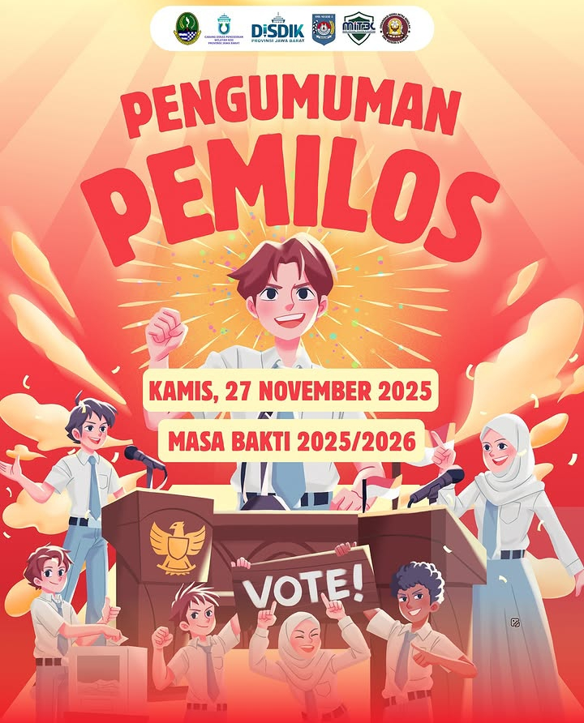

SEKOLAH DENGAN DEDIKASI TINGGI
______________________________
SMKN 3 BANJAR merupakan lembaga pendidikan kejuruan yang berkomitmen
mencetak generasi muda yang siap menghadapi dunia kerja, dunia usaha,
maupun perkembangan teknologi di era modern.
Dengan mengedepankan kualitas pendidikan, karakter, dan keterampilan,
sekolah kami berupaya membentuk siswa yang disiplin, kreatif, inovatif,
serta memiliki semangat belajar yang tinggi.
Sekolah kami didukung oleh tenaga pendidik yang berpengalaman,
fasilitas pembelajaran yang memadai, serta berbagai kegiatan
pengembangan bakat dan minat siswa.
Dengan lingkungan belajar yang nyaman dan kondusif,
SMKN 3 BANJAR terus berupaya menjadi sekolah kejuruan
yang unggul, berprestasi, dan mampu menciptakan lulusan
yang berkualitas, mandiri, serta siap menghadapi tantangan masa depan.
PROGRAM YANG ADA DISEKOLAH KAMI
ORGANISASI OSIS

Berlajar Menjadi siswa Demokrasi dan Berjiwa Pemimpin